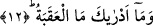
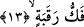
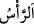
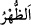
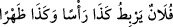
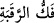

12. O sarp yokuş nedir bilir misin?
Yani ey Muhammed, o sarp yokuşu aşmanın ne demek olduğunu sana bildiren nedir?
Çünkü burada kasdedilen sûrî sarp yokuş ve onu aşmak değildir.
13. Köle âzâd etmek
“Fekk” iki şeyden birini diğerinden ayırmak sûretiyle aralarını açmak demektir.
Bukağının ve kelepçenin çözülmesi gibi. “Fekkü’r-rakabe” ise kişiye hürriyetini
vererek boyunla onun üzerindeki kölelik bağını birbirinden ayırmak ve çözmek
demektir.
“Rakabe” boyun diye bilinen özel uzvun adıdır. Sonra bu kelime ile vücudun tamamı
kasdedilmiştir. Örfte köleler için isim yapılmıştır. Tıpkı “__WORD__ (baş)” ve “__WORD__ (sırt)”
kelimeleriyle binek hayvanının kasdedilip “__WORD__ (Falan şu kadar baş
hayvan veya binit bağlıyor)” denilmesi gibi.
Mânâ ise şöyledir: O sarp yokuşu aşmak köle azad etmektir.
Köle âzâd etmek, ‘sarp yokuş’un kendisinin değil bir muzâf takdîri ile ‘onu aşma’nın
tefsîridir. Çünkü ‘sarp yokuş’ bir nesne, ‘âzad etmek’ ise fiildir. Onun için biri diğerinin
tefsiri olmaz.
“__WORD__ (boynu çözmek/âzâd etmek)” tek başına bir köleyi azad etmek şeklinde
olabileceği gibi kişinin mükateb köleye gerekli mali yardımı yapmak sûretiyle veya
herhangi birisini kısastan ya da mali cezâdan kurtarmak için ona yardım etmek şeklinde
de olabilir. Bütün bunlara fekk/âzâd etmek/kurtarmak denilebildiği halde “i’tâk/köle
âzâd etmek” denilemez.
“Boynu çözmek/âzâd etmek” ile kişinin sâlih ameller işleyip onlar sâyesinde Cennete
girmek ve Cehennemden kurtulmak sûretiye kendi boynunu Allah’ın azabından
kurtarmasının kasdedilmiş olması da muhtemeldir. Bu orta hürriyettir. Kişinin kalp
boynunu nefsin esaretinden, hevâ ve hevesin zincirinden, mâsivâya bağlanmaktan
kurtarması ise en büyük hürriyettir. Buna göre sonraki âyetlerdeki “Veya açlık gününde
yakını olan bir yetimi, yahut aç-açık bir yoksulu doyurmaktır…” gibi genellemeden
sonra tahsis/özel kılma kabilinden olur. Bu da has kılınan şeyin faziletinin fazlalığına
işârettir. Önceki lafız umûmî olup onu da içine aldığı halde onun içinden çıkarılarak
ayrıca zikredilmiştir.